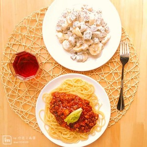

| 材料：番茄酱 | 数量: 400克 |
| 材料：肉末 | 数量：200克 |
| 材料：洋葱 | 数量：半个或是一个 |
| 材料：大蒜 | 数量：一个 |
| 材料：橄榄油、黄油 | 数量：适量 |
| 材料：盐、糖、黑胡椒粉 | 数量：适量 |
| 材料：料酒、意大利面 | 数量：适量 |
步骤一: 材料处理：大蒜捣成泥，洋葱进料剁碎（如果有果汁机可以用其打碎）， 肉末放入料酒抓一下，如果用番茄则需去皮后切成小丁。
步骤二: 起锅融化黄油，放入肉末炒至泛白起锅待用。
步骤三: 锅里入橄榄油，放入蒜泥炒香，倒入洋葱炒3分钟，彻底炒出洋葱的香味。
步骤四: 倒入番茄酱或番茄丁，大火烧开，小火熬煮10分钟。
步骤五: 倒入炒好的肉末，用盐和糖调味，再熬煮3~5分钟即可起锅，用不完的酱可以封存好放入冰箱冷藏室，一周不坏。
步骤六: 锅里烧开水，放入意面，煮12分钟。
步骤七: 待意面煮软，没有硬心的时候，捞出面条，拌入橄榄油，再淋上刚刚做好的酱汁一次，洒上黑胡椒粉调味就可以了。 也可以用黄油炒一下酱汁再和面一起拌炒，洒黑胡椒粉调味。。

步骤八: 有心情的话可以拌个水果沙拉再倒点红酒，逼格瞬间提高不少。
